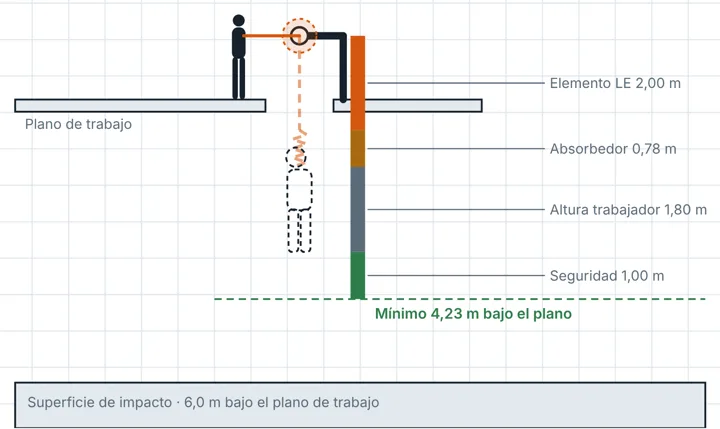
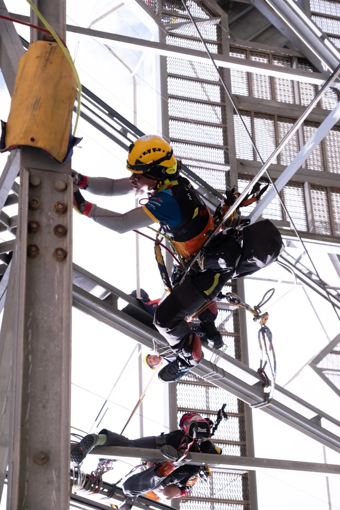
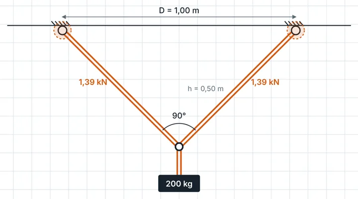
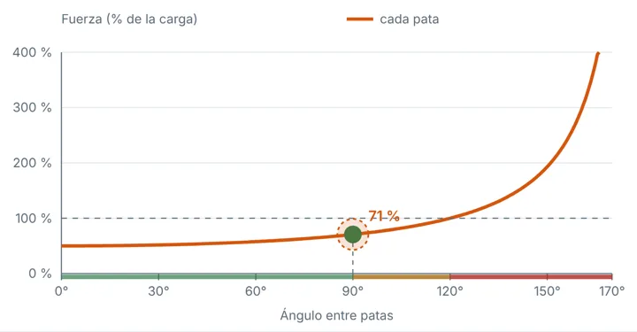
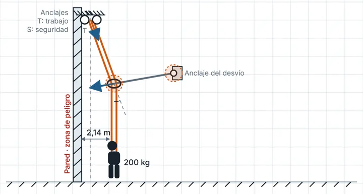
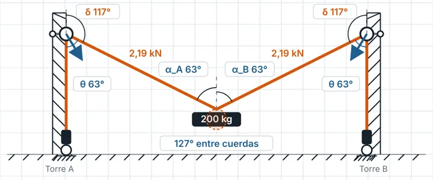
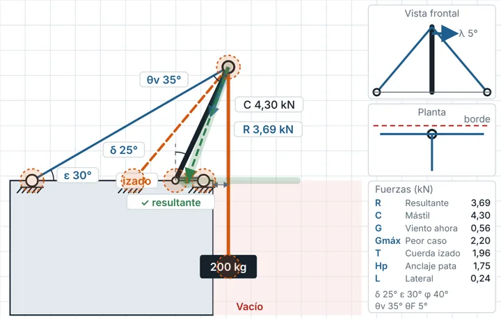
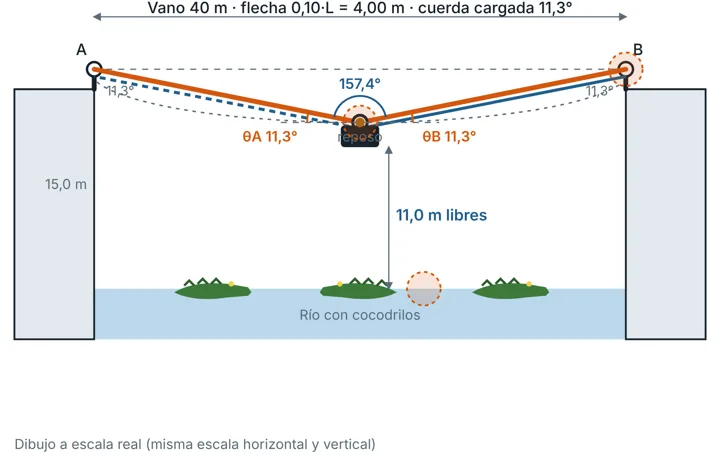

01
Requerimiento de claridad
Altura libre necesaria en FC 0, 1 y 2, fuerza de choque y apertura del absorbedor EN 355.
Nuevo · simulador de fuerzas
Mueve la carga, el anclaje o el mástil y mira al instante cuánta fuerza recibe cada punto de tu sistema de cuerdas, con la ecuación paso a paso y el factor de seguridad.
Acceso por invitación para técnicos de acceso por cuerda, rescate y formadores. ¿Ya estás autorizado? Abrir el simulador →

Qué es
Nace en el aula: las fuerzas que hasta ahora se explicaban en la pizarra con un solo caso, el alumno las ve cambiar mientras arrastra.
Esquemas a escala con puntos que se arrastran. Cada cambio de ángulo o de posición recalcula todo en milisegundos.
Debajo de cada esquema, el paso a paso con la ecuación y los números sustituidos, para repetirlo con calculadora.
Factor de seguridad de anclajes, cuerda con su nudo y equipo, con referencias UNE-EN 795, 355, 360, 1891 y manuales de fabricante.
7 módulos

Altura libre necesaria en FC 0, 1 y 2, fuerza de choque y apertura del absorbedor EN 355.

Tensión de cada pata, extracción y cortante, y la cuerda con su nudo. T₁ = W·sen β ÷ sen(α+β)

A 120° cada anclaje soporta el 100 % de la carga. T = W ÷ (2·cos(θ/2))

Fuerza en el desvío y cuándo hay que duplicarlo. R = 2·T·sen(δ/2)

Dos torres, desvíos en altura y descensores en la base: la carga se traslada y se eleva.

Resultante, compresión del mástil, vientos con diseño ±15° y el láser que avisa del vuelco.

Fuerzas en cabeceras en todo el recorrido y tracción real con MAESTRO, CLUTCH o I'D y polipasto.
Cómo funciona el acceso
Formación
Próximamente, un vídeo por módulo en el canal de YouTube @RESCUETEAMTRAINING.
Solicitud de acceso
Cuéntanos quién eres y para qué quieres usar el simulador. A cambio, te pedimos tu opinión: dentro de la app hay un botón para enviarla en un minuto.
Aviso. RigCalc Rescate es una herramienta de formación y de análisis previo. Sus cálculos son estáticos e idealizados y no sustituyen el manual del fabricante, la evaluación de un técnico competente ni la normativa aplicable a cada instalación.